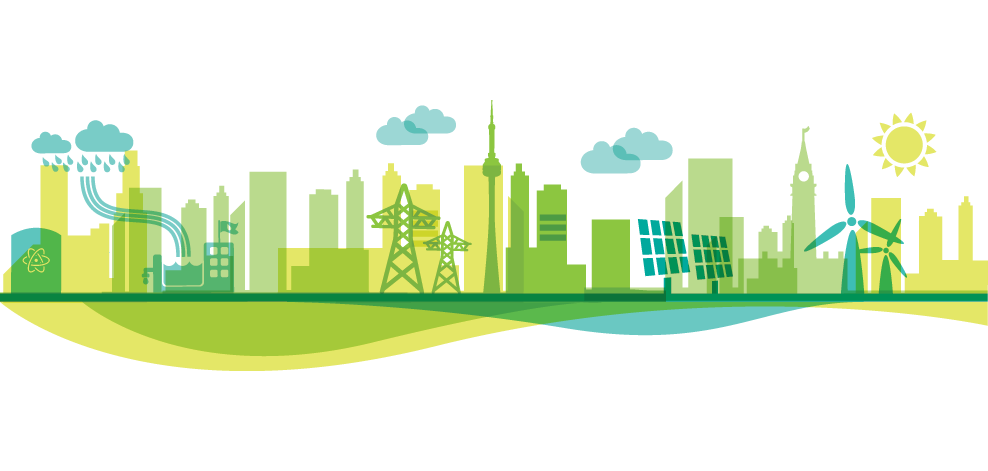

I'm Ola Thompson
Energy System Eng., (M.Eng)
LEED Green Associate
Web Developer

Hello
I'm an Energy Systems Engineer from the University of Waterloo, a superb work ethic, and a strong
engineering research background to support a broad range of electrical engineering design, sustainability, clean energy,
green technology projects, and initiatives. Also consolidated my commitment towards the sustainability movement
in building construction by achieving the LEED Green Associate credential.
Education

Master of Engineering in Sustainable Energy Systems
University of Waterloo (Grade: 84)
Coursework in: Energy Processing, Solar (PV) systems, Distribution Systems, Power Systems
Operation,
Load Flow Analysis, Entrepreneurship & Innovation, Leadership & Management, and Project Management.
Research in: Fault Detection in Hybrid HVDC Grids, High Efficiency Solar Devices,
Market Inefficiencies arising from Transmission Congestion, Hybrid Energy Storage Systems for Electric
Vehicles.

Bachelor of Science in Electrical & Electronic Engineering
Kwame Nkrumah University of Science and Technology Kumasi, Ghana (2:1)
Research in: Comparative Analysis of the Overall Efficiency Improvement of Solar PV.
Work Experience
Junior Engineer
Bolamark Engineering | Aug. 2019 – Dec. 2020
Provided insight on Schneider Electric projects, including:Automatic Transfer Switch with capacitor to aid
enhance power factor.
Designed electrical systems components that minimize electric energy requirements, such as lighting systems
designed to account for natural lighting using DIALux.
Managed the integration of rooftop solar system installations for residential customers.
Prepared electrical calculations, specifications, and designs, such as electrical equipment layouts,
lighting layouts, cable and panel schedules.
CO- OP
Cometstar wire and cables manufacturing company |May. 2017 – Aug. 2017
Supported the electrical project team by providing high quality deliverables, which allowed the project
leaders to focus on look ahead and risk items.
Project coordination deliverables which include scheduling, risk assessment, cost management, verifying
work plans, field work,work order management, working with various stakeholders and putting together
meeting minutes.
Managed Purchase Orders, Bill of Materials and the Risk Management Oversight tool and for each project
in my section.
MAJOR PROJECTS
Designed a GUI Quiz App using Python
The trivia API was used to get the questions from the internet, tkinter was used for the graphic user interface, and
the
programme was written in Python. I took a step further by modifying the questions based on the user's outcomes in
order
to keep the quiz app engaging for the user.
Bidirectional Converter for a DC Power System with Renewable Energy Resources (wind & solar) and an Energy storage system using PSIM.
A bidirectional DC/DC converter, as well as a low pass filter and a protection system, were designed to connect an
energy storage unit to the DC bus. The energy storage unit's power supply/absorption was determined by the solar PV,
wind, and load profiles (conservation of energy).
Design, Analyse & Sizing of Green Energy Systems using ETAP.
The system concludes conventional generation, dynamic loads, wind turbine generators, PV array, and, energy storage
devices. Energy storage was modelled using ETAP UDM editor. Load flow and short circuit analysis. Also conducted
studies
on protection and coordination.
Load Flow Analysis of a 14 bus system using Matlab Simulink and PSAT.
Load flow and short-circuit analysis of a 14-bus system with and without PV reactive limits in Matlab, with results
compared to PSAT.
My Skills.
Power System Simulation Tools
ETAP | PSIM | PSAT
Engineering Software
MATLAB | DiaLUX | AutoCAD| MS Office | GAMS | Python(JSON, HTML(5), CSS)
Soft Skills
Project Management |Understanding Drawing Specifications | MS Office
CERTIFICATES

Conrad School of Business(Business and Entrepreneurship
© 2022 Tolulope Olatunde Thompson